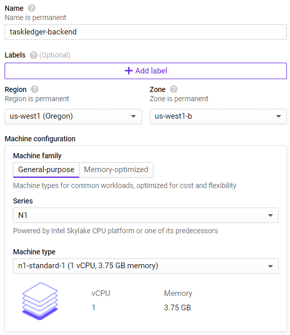
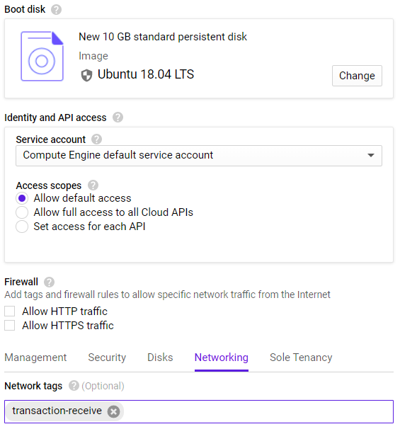
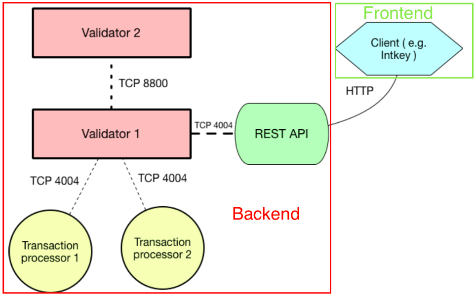
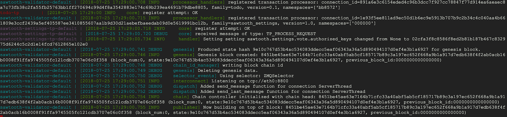

In this codelab, we will stop using the backend server from before and replace it with our own. As with the frontend, a skeleton implementation for the backend server is given along with an explanation of how its components work. This will help give you an understanding of how the Sawtooth transaction processor stores data in its blockchain. We will then implement the functions that process transactions.
To begin with, shutdown the previous backend VM and then bring up a new VM instance. Configure it in the same way as below.

Select Ubuntu 18.04 LTS for the operating system and then click on "Management, security, disks, networking, ...". Within the "Networking" tab, add the network tag for allowing incoming transaction traffic on port 8008.

Then, click "Create" to launch the instance.
ssh into the instance via the Compute Engine UI once it comes up. On the VM, run the following commands to install the required packages, including docker and docker-compose.
sudo apt update -y sudo apt install -y python3-pip pkg-config libtool automake docker.io docker-compose
Then, install the Sawtooth Python SDK
sudo pip3 install sawtooth-sdk==1.0.5
Finally, add yourself to the docker group on the VM so you can run docker without sudo.
sudo usermod -a -G docker $(whoami)
Next, log out and then log back into your VM instance for the changes to take hold. Then, clone the course repository that contains an initial skeleton of the code that you will fill in throughout this tutorial.
git clone https://github.com/wu4f/cs410b-src.git
Next, clone your repository, copy the backend files from the course repository into a directory in your repository named sawtooth03. Then, add, commit and push the new files into it.
mkdir <your-course-repo>/sawtooth03 cp -r cs410b-src/backend/* <your-course-repo>/sawtooth03 cd <your-course-repo> git add sawtooth03 git commit -m "sawtooth03 initial commit" git push

The network depicted above has two validator nodes, which slightly unlike the system to be developed in the codelab. Ours only runs a single node, and has a single transaction processor, but is structurally the same otherwise. The backend's REST API receives transactions from the frontend client over HTTP on port 8008. The transaction processors move the transaction to the appropriate handler function. They're either permitted in state or not depending on their validity.
Transaction processors handle the business logic which permit or decline transactions from being added to state. When a client sends a transaction to the network, transaction processors validate the transaction and apply the changes to state which will be put into the next block. Validator nodes will check to make sure that the signature of a transaction is valid, but additional logic can be implemented in the transaction processor to check more specific requirements for a transaction.
The processor itself is provided by the SDK, and is called in the file main.py at the bottom of the main method. Once called, it runs indefinitely waiting for transactions to verify. On your backend VM in GCP, run the following command to start up your own transaction processor.
docker-compose -f sawtooth-default.yaml up

The transaction processor should register with `OK`. Issue the following commands to bring the docker containers down.
ctrl + c (the control key pressed in combination with the `c` character)
docker-compose -f sawtooth-default.yaml down
You have started and stopped your own blockchain transaction processor, but for it to be able to process transactions we need to implement transaction handler functions. .
Transaction processors are typically called via the `apply` method. This means that when a processor receives a transaction, the apply function will run. This is explained clearly here and the code for `apply` can be found in `handler.py`. In our implementation, the `apply` function calls another function, `_unpack_transaction()`, which gets the relevant information from the transaction as well as dynamically determining the correct handler function to call based on the transaction type. Whatever handler function is determined to be appropriate is then called to apply the transaction.
handler.pydef apply(self, transaction, state):
'''
A Payload consists of a timestamp, an action tag, and
attributes corresponding to various actions (create_asset,
touch_asset, etc). The appropriate attribute will be selected
depending on the action tag, and that information plus the
timestamp and the public key with which the transaction was signed
will be passed to the appropriate handler function
unpack_transaction gets the signing key, the timestamp, and the
appropriate payload attribute and handler function
'''
# TO DO : check that timestamp is valid before calling handler.
signer, timestamp, payload, handler = _unpack_transaction(transaction, state)
# note that handler will be chosen by what was given to unpack
handler(payload, signer, timestamp, state)_unpack_transaction()The `_unpack_transaction()` function can be inspected to understand the logic: First, it extracts the payload, which stores relevant information about the transaction, and the signer's public key:
def _unpack_transaction(transaction, state):
'''Return the transaction signing key, the SCPayload timestamp, the
appropriate SCPayload action attribute, and the appropriate
handler function (with the latter two determined by the constant
TYPE_TO_ACTION_HANDLER table.
'''
# public key used to sign the transaction
signer = transaction.header.signer_public_key
# create an empty Payload object defined in protos/payload.proto
payload_wrapper = Payload()
# decode the payload from the binary format
payload_wrapper.ParseFromString(transaction.payload)
# define the desired action type indicated by the payload
action = payload_wrapper.action
timestamp = payload_wrapper.timestampThen, a dictionary is used to translate the action type of the payload to the handler function. For instance, if the action type of a payload is "Payload.CREATE_PROJECT," _create_project() will be called.
# in `_unpack_transaction(...)`
# used to determine which handler function should be used on a certain type of payload
TYPE_TO_ACTION_HANDLER = {
Payload.CREATE_PROJECT: ('create_project', _create_project),
Payload.CREATE_TASK: ('create_task', _create_task),
Payload.PROGRESS_TASK: ('progress_task', _progress_task),
Payload.EDIT_TASK: ('edit_task', _edit_task),
Payload.ADD_USER: ('add_user', _add_user),
}
try:
# get the correct payload field and handler function from the action type
attribute, handler = TYPE_TO_ACTION_HANDLER[action]
except KeyError:
raise InvalidTransaction('Specified action is invalid')
# extract the correct payload based on the action type
payload = getattr(payload_wrapper, attribute)
# go back to apply
return signer, timestamp, payload, handlerState is a snapshot of current data stored on the blockchain, represented by a merkle-tree data structure. A full explanation of merkel-trees is outside the scope of this document. Each node of data stored in state has an address that is assigned when the data is inserted and can be used to find the data again quickly. Addresses are 70 characters in length and can be created in a variety of ways. This code uses an addressing scheme where we hash an identifier to make seemingly random addresses in state. This makes it unlikely that we'll deal with a collision, where two different nodes need the same address. However, since we want to be thorough, we need to solve the possible collision issue. Instead of storing our project and task nodes directly in state, we wrap them in containers that can hold multiple nodes. This means that if two nodes need the same address, they will be put side by side in the container and will both be able to use the same address.
The addressing scheme we will be using in this project is detailed in the following file. We will be storing two types of nodes. The first are tasks, which contain specific information about the task like its name and description. The second type is a project metanode for each project which keeps track of the tasks and authorized contributors. For tasks, the address is generated with 6 digits that designate the namespace of the transaction family we are using, called "todo." The next two digits are "02," denoting that the node is a task and not a metanode. The next 47 digits are a hash of the project name, and the last 15 digits are a hash of the task name.
The project metanode addresses are similar except the tag digits are "00" instead of "02" and the hash of the task name is replaced by 15 zeros.
def _hash(string):
return hashlib.sha512(string.encode('utf-8')).hexdigest()
FAMILY_NAME = 'todo'
NAMESPACE = _hash(FAMILY_NAME)[:6] # namespace
PROJECT_METANODE = '00' # tag character defines address type
TODO_TASK = '02'
def make_task_address(project_name,task_name):
return (
NAMESPACE
+ TODO_TASK
+ _hash(project_name)[:47]
+ _hash(task_name)[:15]
)
def make_project_node_address(project_name):
return (
NAMESPACE
+ PROJECT_METANODE
+ _hash(project_name)[:47]
+ ('0'*15)
) We will be storing data as two different types of data: project metanodes, which contain a list of task names in the project as well as a list of contributor's public keys, and tasks, which contain a name, a description, and a progress level. The proto files can be seen below.
message ProjectNode {
string project_name = 1;
//list of public keys of users that can make changes to this project
repeated string public_keys = 2;
repeated string task_names = 3;
}message Task {
enum Progress{
NOT_STARTED = 0;
IN_PROGRESS = 1;
TESTING = 2;
DONE = 3;
}
string project_name = 1;
// name of task, used as identifier
string task_name = 2;
// A =description of the task
string description = 3;
// Unix UTC timestamp of approximately when this task was registered
uint64 timestamp = 4;
Progress progress = 5;
}We have two auxiliary functions for accessing state. "_get_container()" works by figuring out the type of node based on the tag bits of the address, calling the sawtooth-sdk function "get_state()," and then decoding the returned data using the correct protocol buffer for the node type.
def _get_container(state, address):
'''Returns the container at a given address from state'''
# tag bits that designate the type of node (task/project metanode)
tag = address[6:8]
# translate the tag bits to the correct type of container for the node
containers = {
addressing.PROJECT_METANODE : ProjectNodeContainer,
addressing.TODO_TASK : TaskContainer,
}
# initialize the correct type of container based on
container = containers[tag]()
# get the state at the given address
entries = state.get_state([address])
if entries:
data = entries[0].data # extract the data from the state
container.ParseFromString(data) # decode data and store in container
return containerSetting state does the same process in reverse, first encoding the container to binary using its protocol buffer, and then calling the sdk function "set_state()."
def _set_container(state, address, container):
'''Sets the state at a certain address to a given container'''
try:
addresses = state.set_state({
address: container.SerializeToString()
})
if not addresses:
raise InternalError(
'State error, failed to set state entities')
except:
raise InternalError(
'State error, likely using wrong in/output fields in tx header.')Before we get started implementing the logic for the transaction processor, we need to change the IP addresses that we are querying from the prior backend VM from the previous labs to our own backend. This can first be done for sending transactions:
def send_it(batch_list_bytes):
'''Sends batch to REST API, eventually reaching validator nodes and transaction processors'''
# ship it out and scrape
url = "http://(insert ip):8008/batches"As well as for viewing transactions through the print_project.py file:
# queries state
resp = requests.get("http://(insert ip):8008/state")
state = json.loads(resp.text)['data']
Now that the transaction has been sent to the network, it will eventually reach a transaction processor, which will apply the transaction to state. We need to implement a handler function for project creation transactions. This function will be called by `apply()` as detailed in the "Network Structure" step.
The function will use the project name given in the payload from the previous codelab. First it must check if the payload is complete, and then it must check if there are any projects with the same name. If these tests pass, it can create a project metanode that can be inserted into state. This metanode denotes that this project exists and will be useful later when the client wishes to create tasks in the project. It also contains a list of contributor's public keys so that only people authorized to make changes to the project will be able to.
def _create_project(payload, signer, timestamp, state):
''' Creates a project metanode and allows tasks to be created
Takes the project name and makes an address given the METANODE tag
that name, and the txn family. A project name must be unique, the
txn will fail if it is not.
'''
# check for complete payload
if not payload.project_name:
raise InvalidTransaction(
"Project must have a name")
project_address = addressing.make_project_node_address(payload.project_name)
project_container = _get_container(state,project_address)
if not project_container: # if no container exists, create one
project_container = ProjectNodeContainer(entries=[])
# check to see if a project already exists under the same name
if any(project_node.project_name == payload.project_name
for project_node in project_container.entries):
raise InvalidTransaction(
'Project with this name already exists.')
# create the metanode protobuf object
project_node = ProjectNode(
project_name = payload.project_name,
public_keys = [signer]) # add creator of project to authorized public key list
# add project to container
project_container.entries.extend([project_node])
# set state with new project included
_set_container(state, project_address, project_container)The first step is to check to make sure that the payload is complete with all the information needed, as well as verifying that the author of the transaction is authorized to create tasks in the given project.
def _create_task(payload, signer, timestamp, state):
''' Creates a task node and adds the task to the project\'s list of task names
Takes a task_name and description. Makes an address given the project
name and the task name. Each task name must be unique in the
project.
'''
# check for complete payload
if not payload.project_name:
raise InvalidTransaction(
"Project must have a name")
if not payload.task_name:
raise InvalidTransaction(
"Task must have a name.")
if not payload.description:
raise InvalidTransaction(
"Task must have a description.")
# verify transaction is signed by authorized key
_verify_contributor(state, signer, payload.project_name)The next step in `_create_task()` is to look at the list of task names stored in the project metanode. First there is a check to see if a task with the same name already exists, but if this passes then the new task name can be added to the list.
# in _create_task(...)
# find address of project metanode
project_node_address = addressing.make_project_node_address(payload.project_name)
# get container of project metanode
project_node_container = _get_container(state, project_node_address)
# find the correct project metanode
for project_node in project_node_container.entries:
if project_node.project_name == payload.project_name:
# check to make sure no existing task has the same name and invalidate transaction if one does
if any(task_name == payload.task_name for task_name in project_node.task_names):
raise InvalidTransaction(
"This task name is already in use.")
# add new task name to list of task names in project metanode
project_node.task_names.extend([payload.task_name])
# set the state of the project metanode with the additional task name
_set_container(state, project_node_address, project_node_container)After this is all done, the task node can finally be created. First, a task object is created as defined by task.proto, and then the task can be added to the container at its address and set in state.
# in _create_task(...)
# create the task object
task = Task (
project_name = payload.project_name,
task_name = payload.task_name,
description = payload.description,
timestamp = timestamp)
# make the task address
task_address = addressing.make_task_address(payload.project_name, payload.task_name)
# get the container of tasks at the address
task_container = _get_container(state, task_address)
# add the task to the container
task_container.entries.extend([task])
# set the state at the address
_set_container(state, task_address, task_container)Similar to creating a task, when editing a task's description, we must first check payload integrity and verify that the signer is authorized.
def _edit_task(payload, signer, timestamp, state):
''' Edit a task\'s description.
Takes a project name, task name, and task description.
Only an authorized contributor can make changes, and
the project/task must exist.
'''
# check for complete payload
if not payload.project_name:
raise InvalidTransaction(
"a project name must be provided")
if not payload.task_name:
raise InvalidTransaction(
"a task name must be provided")
if not payload.description:
raise InvalidTransaction(
'a description must be provided'
)
# verify transaction is signed by authorized key
_verify_contributor(state,signer, payload.project_name)Then, we can find the task, edit the description, and set it in state. Transactions that attempt to edit tasks that don't exist must also be invalidated.
# in _edit_task(...)
# make task address
task_address = addressing.make_task_address(payload.project_name, payload.task_name)
# get the container with tasks at this address
task_container = _get_container(state,task_address)
# check if it doesn't exist
if not task_container:
raise InvalidTransaction(
"task with specified name does not exist")
# find the task with the correct name
for task in task_container.entries:
if task.task_name == payload.task_name:
# set the new description and put it in state
task.description = payload.description
_set_container(state, task_address, task_container)
return
# if task with specified name not found, reject transaction
raise InvalidTransaction(
"task with specified name does not exist")We'd like to implement the ability to process a transaction to increment the progress of the task. Take a look at the protobuf file below to see what a task data type looks like. Notice that there are a few different stages a task can be: NOT_STARTED, IN_PROGRESS, TESTING, or DONE. Check to see that a payload contains the necessary information for a task to be progressed. Don't forget that you shouldn't be able to make a task more "DONE" than it already is. The function must pull the task out of state, increment the progress, and put the task back into state.
message Task {
enum Progress{
NOT_STARTED = 0;
IN_PROGRESS = 1;
TESTING = 2;
DONE = 3;
}
string project_name = 1;
// name of task, used as identifier
string task_name = 2;
// A =description of the task
string description = 3;
// Unix UTC timestamp of approximately when this task was registered
uint64 timestamp = 4;
Progress progress = 5;
}
message TaskContainer {
repeated Task entries = 1;
}Up until now we've only had one owner contribute to their project and its tasks. We can change that by adding a handler function with the purpose of extending a list of verified contributors. Of course a contributor would have to authorize this addition to their project. Given a certain project and new passphrase, it should be possible to add that user to the list of users in a project metanode. The function must pull the project node from state, add the new public key to the list, and put the project node back into state.
message ProjectNode {
string project_name = 1;
//list of public keys of users that can make changes to this project
repeated string public_keys = 2;
repeated string task_names = 3;
}Make sure your code works: Try sending a transaction of each type.
Using print_project.py , for each action above: